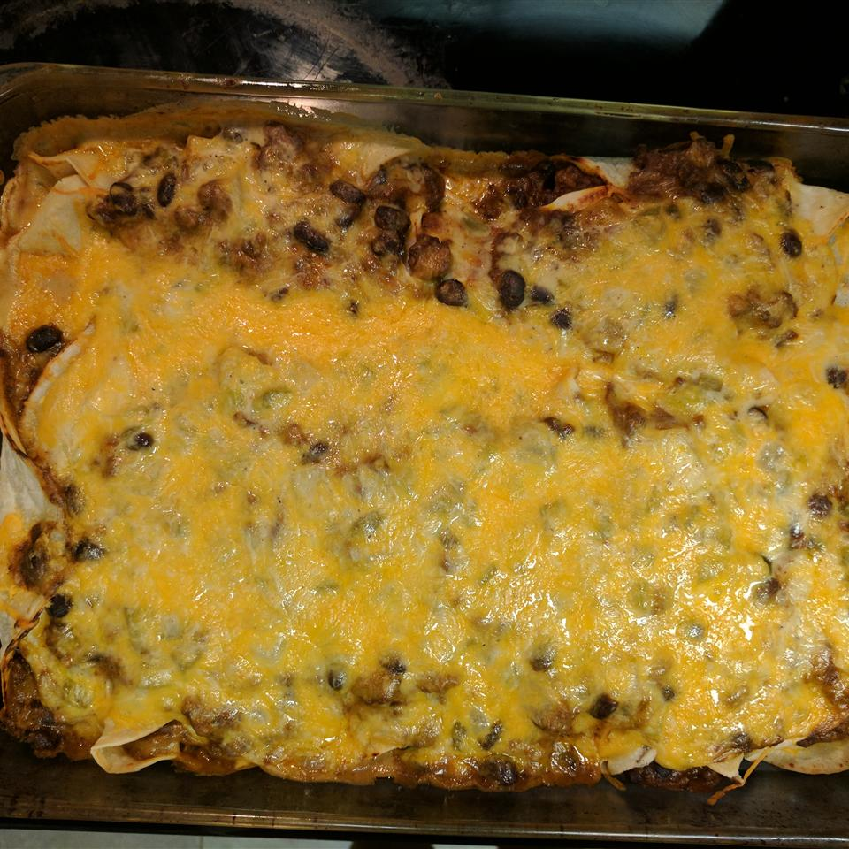

Heather's Beef Enchiladas
Description
This recipe is one of my family's favorites. It can be made in advance and then reheated, or you can make the different components ahead of time and then just assemble and bake for a quick dinner. Serve with sour cream and picante sauce or salsa.

Ingredients
- Cooking spray
- 1/2 teaspoon garlic powder
- 1/4 teaspoon ground black pepper
- 1/4 teaspoon cayenne pepper
- 1/4 teaspoon ground cumin
- 1/4 teaspoon dried marjoram
- 1/4 teaspoon dried oregano
- 1 pound ground beef
- 1 (15 ounce) can black beans, drained and rinsed
- 2/3 cup water
- 1/3 cup taco seasoning mix (such as Old El Paso)
- 1 tablespoon butter
- 1/2 cup diced green onions
- 1 (10.75 ounce) can reduced-fat, reduced-sodium cream of mushroom soup
- 1/2 cup reduced-fat sour cream
- 1 (4 ounce) can diced green chile peppers, drained
- 1/2 cup shredded Cheddar-Monterey Jack cheese blend
- 1/4 cup milk
- 7 large flour tortillas, or as needed
Steps
- Preheat oven to 350 degrees F (175 degrees C). Spray a deep 12x6-inch hotel pan or casserole dish with cooking spray.
- Mix garlic powder, black pepper, cayenne pepper, cumin, marjoram, and oregano together in a small bowl.
- Heat a large skillet over medium-high heat and stir in ground beef. Cook and stir until the beef is crumbly and no longer pink, about 10 minutes. Drain and discard any excess grease. Add black beans, water, and taco seasoning; cook and stir mixture until most of liquid is evaporated, 5 to 10 minutes.
- Heat butter in a separate skillet over medium heat; cook and stir green onions in the melted butter until softened, about 5 minutes. Mix cream of mushroom soup, sour cream, green chile peppers, and garlic powder mixture into green onions; reduce heat to low and simmer until mixture is heated through, 2 to 3 minutes.
- Remove 3/4 cup soup mixture and stir into ground beef mixture; fold in 1/2 cup Cheddar-Monterey Jack cheese until well incorporated.
- Stir milk into the remaining soup mixture until sauce is smooth; remove from heat.
- Spoon about 1/2 cup ground beef mixture into each tortilla. Roll each tortilla around filling and place seam side down into the prepared pan. Pour sauce over enchiladas, spreading to completely coat. Sprinkle 1/2 cup Cheddar-Monterey Jack cheese over enchiladas.
- Bake in the preheated oven until cheese is melted and edges of the casserole are browned, 30 to 35 minutes.